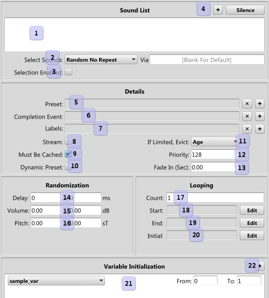

|
Start Sound |
|
Start Sound starts one or more sounds.

- The list of sounds available to the start sound step.
- The method used to select a sound to play.
- If checked, the sound expects a value from the game in order to select a sound to play.
- Selects a sound to add.
- The preset to apply on start - name, clear, and select.
- The event to queue when the sound completes - name, clear, and select.
- The labels the sound will be known by - names, remove a label, and add a label.
- If checked, the sound streams data in over time.
- If checked the sound must be loaded in memory before it can start. Ignored for streams.
- If checked, the preset polls its variables every frame and updates, otherwise it only checks when the sound starts.
- The method used to select a sound to evict, if this sound encounters a limit.
- The priority for this sound, when checked for eviction.
- The time the sound fades in over.
- The max and min time to select the start delay from, in milliseconds.
- The max and min decibels to select the start volume with.
- The max and min semitones to select the start pitch with.
- The number of times to loop the sound, 0 for infinite.
- The offset to start the sound at. See remarks below.
- The loop end point to use. See remarks below.
- The loop start point to use. See remarks below.
- The list of variables to initialize for the sound before it starts, and their ranges.
- Buttons to add a new/delete variable initializations.
When a Start Sound step is encountered, it plays one or more sounds. Currently there is only
one way to start multiple sounds, using the Blended method. If not a Blended sound, the "Via" field is only used if you want
to share the list state across multiple events - in general it should be avoided. For a Blended sound, a drop down
showing the available Blends is displayed.
- Random - A sound is selected at random from the list, and may repeat.
- Random No Repeat - A sound is selected randomly, but the last played sound will not be selected.
- In Order - Each time the event plays, the next sound in the list plays.
- Random List - The list is randomized and played, then once all sounds have been played, it is randomized again.
- Blended - All sounds are started, and the selected Blend is used to crossfade between them. In order to control the crossfade,
the game must set a variable equal to the name of the Blend.
The "Selected" check box is used for more advanced sound selection. If checked, when the start sound
event step is selecting a sound to play, it will expect the game code to have enqueued a specific value
(see AIL_enqueue_event_selection with the event name. The start sound event step will then replace any numbers
following the name of the chosen sound from the sounds list with the number provided. For example, lets assume the sounds list contains only "MyBank/ElfAnnounce001" and is marked as Selected. The game programmer passes in 12 when queueing by
using AIL_enqueue_event_selection. The sound that will be played is "MyBank/ElfAnnounce012". Note that the number
of digits is retained - the sound was NOT "MyBank/ElfAnnounce12" - the zero is kept. This is very useful for dialog,
as only one event can be used to play any number of sounds.
Sound eviction occurs when a sound tries to play, but encouters a limit you've set. This limit can come from
one of two places, either a Set Limits event step, or the limit on a Sound Asset itself.
When this occurs, the runtime looks at all the currently playing sounds as well as the new sound that is trying
to play, and chooses one to either stop, or prevent from playing.
There are 4 methods that can be used:
- Priority - Evict the sound with the lowest priority value. In the event all sounds have the same priority,
the new sound will not play.
- Distance - Evict the sound that is the farthest from the listener.
- Volume - Evict the sound that has the quietest volume setting. This includes factors such as ramps, 3d spatialization,
and blends. It does not take in to account the sample's waveform, so a sound that happens to be at a quiet point will not be affected.
- Age - Evict the sound that has been playing the longest.
The start offset and loop points can be represented in several different ways. Most likely you'll use
the first two, but all are available. Generally you'll just hit the "Edit" button, and be guided through this
process without having to know the awkward syntax.
- Variable Time Offset - By just typing a variable name in the text box, the runtime will look up
that variable and use the value as a time in milliseconds to use. E.g. "LevelTime"
- Sound Marker - By typing "=" and then a marker name, the runtime will look for that marker in
the Sound Asset and use that. E.g. "=MenuLoopStart"
- SampleStart - The string "SampleStart" is hard wired to the start of the sound.
- SampleEnd - The string "SampleEnd" is hard wired to the end of the sound.
- Hardcoded Time Offset - By typing "=" and then a value, the runtime will use that offset in milliseconds.
E.g. "=1000" for 1 second in to the sound.
- Variable Byte Offset - By prepending a variable name with "@", the variable will be used as a data offset,
not a time offset. E.g. "@SomeDataOffsetVar"
- Hardcoded Byte Offset - By prepending with "@", a hardcoded time offset will instead be a byte offset.
E.g "@=4096" for a 4k data offset.
Note that any point specified in time will only reliably work with Bink Audio or WAVs.
By default, the loop start will use the Sound Asset Marker "LoopStart", and "LoopEnd" for the end. Any entry in the text boxes
will override this behavior.
Variable initialization sets a variable on a sound instance prior to any checks for variables. This
allows the sound designer to randomize all places where a variable could be used during the start sound process.
For instance, you could add a "StartOffset" variable, with a min of 0 and a max of 1000, set the Start Offset
property to it, and the sound would start randomly between 0 and 1 seconds in to its sound.
In addition, you can add a "ChorusDelay" variable, randomize its initialization, and use it for a Chorus filter
applied via preset.
 Event Reference
Event Reference Control Sounds
Control Sounds